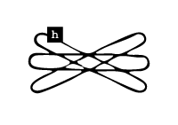
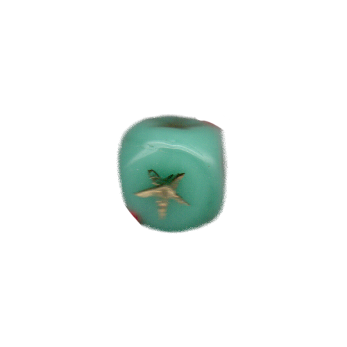
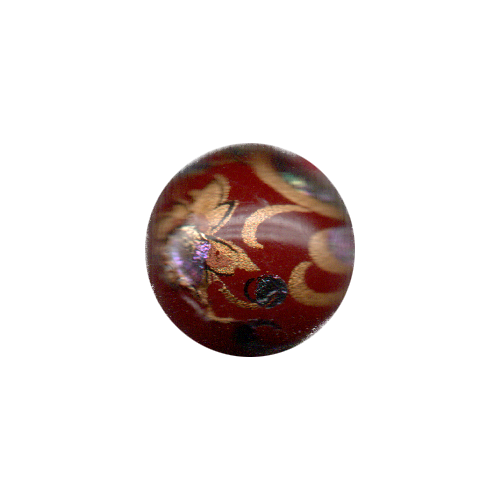
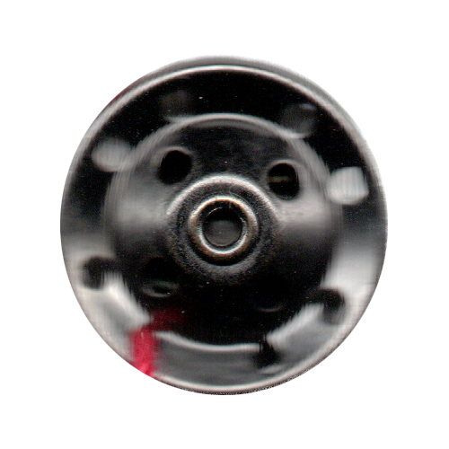
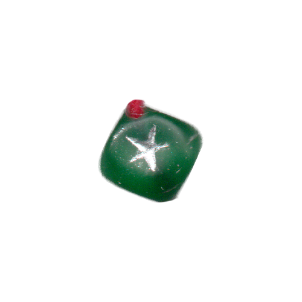

<!DOCTYPE html>
<html lang="kr"></html>
<head>
  <meta charset="UTF-8">
  <meta http-equiv="X-UA-compitable" content="IE-edge">
  <meta name="viewport" content="width=device-width", initial-scale="1.0">
  <title>h</title>
  <link href="h_.css" rel="stylesheet">
  <script type="text/javascript">
    document.oncontextmenu = function(){return false;}
    function redirectToRandomPage() { 
            // Array of specific pages on the website 
            const pages = [ 
                'index7.html', 
                'index14.html', 
                'index21.html', 
                'index28.html' 
            ]; 
            // Generate a random index 
            const randomIndex = Math.floor(Math.random() * pages.length); 
            // Redirect to the randomly selected page 
            window.location.href = pages[randomIndex]; 
    }
  </script>
</head>
<body oncontextmenu="return false" onselectstart="return false" ondragstart="return false" onkeydown="return false">
  <div class="box-container">
      <div class="box-item1">
        <div class="map">
          <a onclick="redirectToRandomPage()">
            
          </a>
          <p>논문 발췌</p>
          <div class="comment">
            <p>해러웨이의 &lt;사이보그 선언문&gt;을 독해하는 데 도움이 되는 논문의 일부를 발췌한 페이지. 다양한 논의를 통해 해러웨이의 세계관을 깊이 이해할 수 있다.</p>
          </div>
      </div>
    </div>
    <div class="box-item2">
      <div class="textbox-center">
        <div class="textbox1">
          <h2>다나 J.해러웨이의 사이보그 페미니즘 시각으로 분석한 사이보그 캐릭터 연구 <br>-&lt;공각기동대&gt;, &lt;이노센스&gt;의 여성 캐릭터를 중심으로-</h2>
        </div>
        <div class="textbox3">
          <p>세종대학교 영상대학원<br>애니메이션 전공<br>손창희<br>2006년 8월</p>
        </div>
        <br>
        <div class="textbox2">
          <p>해러웨이는 위계적인 이항대립의 사고는 유구한 세월을 거쳐 남성 중심적 지배체계의 틀을 제공했을 뿐 아니라 지식의 기반이 되었으며, 이렇게 형성된 편협한 지식은 사회체제와 권력구조를 유지하고 지탱하는 데 이바지하였다고 간주하였다. ‘위계적 이항대립의 이분법’은 하나는 우등하며 언제나 추구되어야 하는 불변의 가치인 반면, 다른 하나는 열등하고 우등한 존재를 위한 부수적인 존재이다. 즉 다른 항을 부정하거나 다른 항의 이해를 종속시키는 관계를 사용한다. 이 위계적 이항대립의 이분법에서는 우등한 하나와 열등한 다른 하나의 질서관계가 전복되지 않는 특성을 가지고 있다.</p>
        </div>
        <div class="textbox2">
          <p>쿠사나기가 정체성을 찾아가는 방향은 적극적인 기계화, 즉 테크놀로지와의 결합을 통해서 이루어진다. 인형사와 결합하고 난 후, 기계 몸을 버리고 네트 속으로 융합되어 사라진 쿠사나기는 전신이 사이보그 바디일 때보다 더더욱 인간이라고 할 수 없는 형태로 자신을 변이시킨다. 이것은 과학기술을 악마적인 것, 인간적이지 못한 것, 두려운 것으로 간주하는 테크노포비아적 시각과는 사뭇 다르다. 오히려 테크노필리아적 시각에 가깝다고 할 수 있다. 쿠사나기는 적극적인 기계화를 통해 기계성과 인간성이라는 이항 대립항을 해체하는 역할을 한다.</p>
        </div>
        <div class="textbox2">
          <p><공각기동대>는 정보화 사회의 네트워크를 기반으로 살아가는 인간의 정체성, 존재론에 대한 고찰과 함께 미래사회와 인류에 대한 예측을 보여주고 있으며, 쿠사나기 소령의 정체성 혼란에 대한 묘사가 주축을 이룬다.</p>
        </div>
        <div class="textbox2">
          <p>자신이 실제라고 믿고 있는 것들이 모두 허상이라면 그리고 자신의 존재 여부를 증명해주고 확인시켜주는 기억까지 조작되어 심어질 수 있다면 어느 누구도 자신을 틀림없는‘나’라고 주장할 수 없을 것이다.</p>
        </div>
        <div class="textbox2">
          <p>이는 ‘육체(껍질) 속에 담고 있는 영혼’을 의미하는 &lt;공각기동대&gt;의 영어제목인 ‘Ghost In The Shell’에서 엿볼 수 있듯이 ‘과연 생명이란 어디서부터 어디까지라고 정의내려야 하는가?’에 대해 질문을 던진다.</p>
        </div>
        <div class="textbox2">
          <p>쿠사나기가 집착했던 것은 외모나 성별이 아닌 ‘기억’이라는 것이었는데, 이는 한 개체 의 자아와 정체성을 형성하는 핵심요소이다. ‘기억’은 내면화된 사건들의 계열체로 하나하나의 사건의 정보이다. 이 정보들이 계열화되면서 기억이 성립하는 것이고 이 기억 메커니즘이 없는 개체는 무의미한 것이다. 개체는 기억을 통해서만 자신의 개별성을 가질 수 있다.<span title="이정우,『기술과 운명 : 사이버펑크에서 철학으로』, 한길사, 2001, p.79"><sup>13&#41;</sup></span> 그러나 쿠사나기와 같이 전뇌화(<span class="chinese">電腦化</span>)한 사이보그들은 기억을 외부화<span title="&lt;공각기동대&gt;에서는‘기억의 외화(外化)’라고 한다."><sup>14&#41;</sup></span>할 수 있고 접속을 통해 주입되고 조작될 수 있는 존재이다. 이러하듯 기억이 정체성의 핵심이라면 어떻게 개체의 정체성을 보장할 것인가 하는 문제에 봉착하게 된다.</p>
        </div>
        <div class="textbox2">
          <p>대부분의 영화가 기계와의 합체 자체를 인간성 상실이나 애정의 상실로 이해하고 그것을 암울하게 묘사하고 있지만, &lt;공각기동대&gt;와 &lt;이노센스&gt;는 오히려 변이와 진화를 가져올 수 있는 하나의 가능성으로 보았다.</p>
        </div>
      </div>
    </div>
    <div class="box-item3">
      <a href="d7.html">
        </a>
        <span class="text1">d. 픽션 속<br>사이보그적 여성</span>
      <a href="e7.html">
        </a>
        <span class="text2">e. 그 자체로<br>신성한 것은<br>없다 </span>
      <a href="l7.html">
        </a>
        <span class="text3">l. 사이보그적 존재들의 확장된 신체</span>
      <a href="n7.html">
        </a>
        <span class="text4">n. 역사 속<br>사이보그적 여성</span>
    </div>
  </div>
</body>